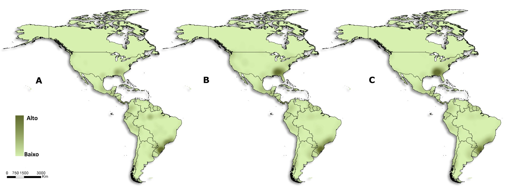
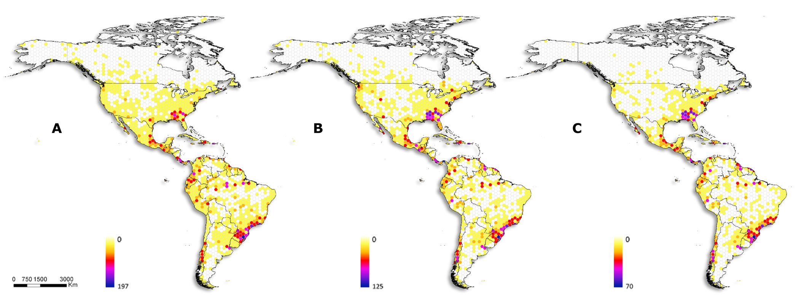
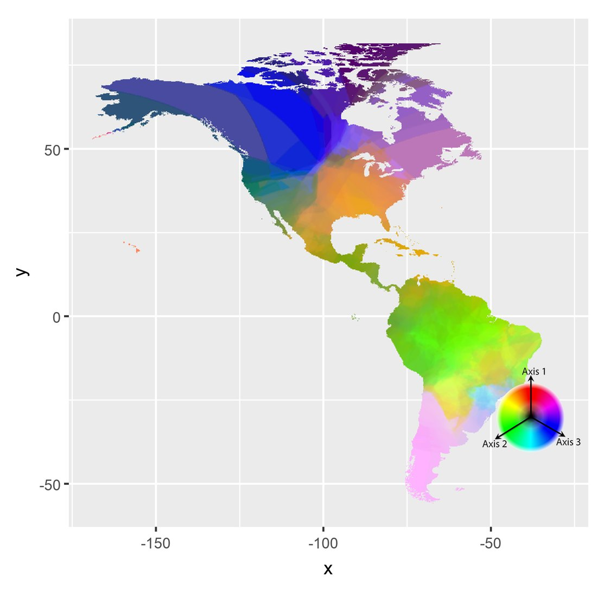
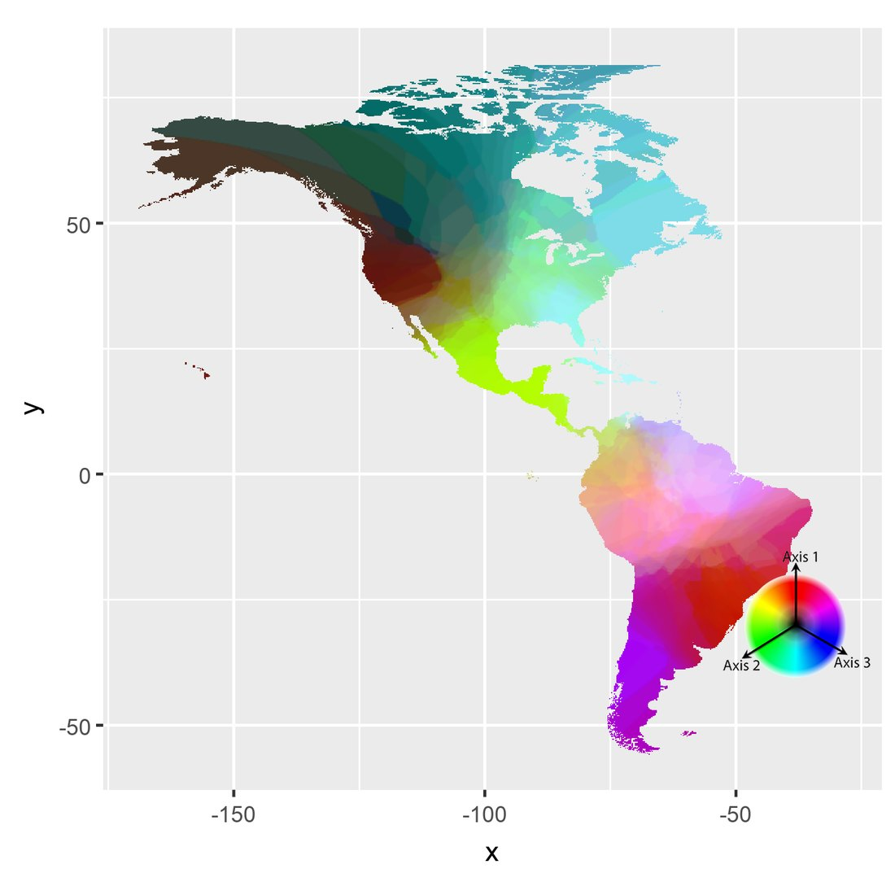
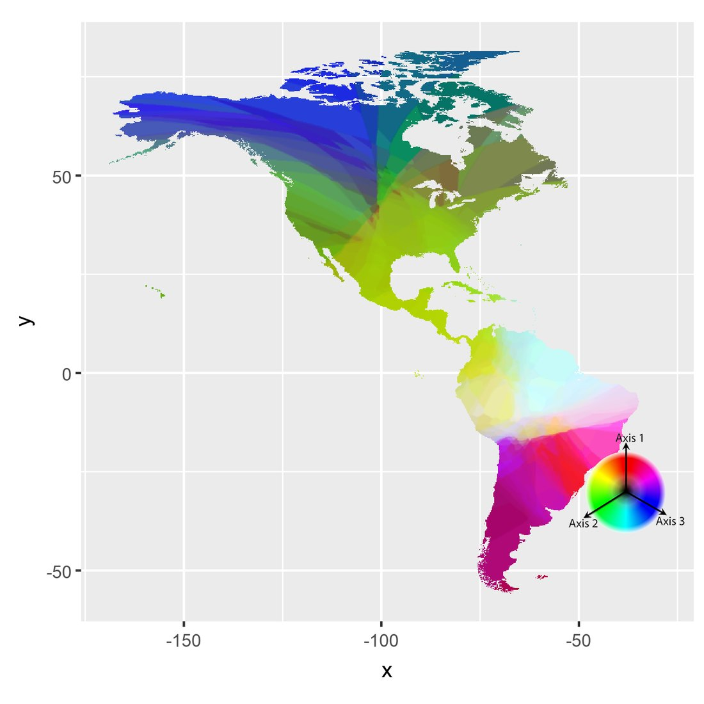

Araneoid spiders of the Americas: 260 years of collecting on the diversity map
Richness, composition and endemism in three time slices, from 1757 to 2017, to separate the biogeographic pattern from the history of collecting.
- Deliverable
- MSc dissertation, Graduate Program in Zoology, UFMG
- Advisors
- Adalberto J. dos Santos · co-advisor Ubirajara de Oliveira
- My role
- Author: database, analyses and maps
- Tools
- ArcMap · Dinamica EGO · Google Earth Pro · Past





Kernel density of records: A. up to 2017; B. up to 1971; C. up to 1892. Darker tones mean more records. The south-eastern United States dominated at first; over time, southern and south-eastern Brazil gain weight.
Richness in 1° hexagons: A. all records, up to 2017; B. up to 1971; C. up to 1892. The older slices already show much of the current pattern, with peaks in southern Brazil and the south-eastern United States.
Three axes of an NMDS with the Bray–Curtis index, interpolated and combined in RGB colours. Different colours mean different communities; colours are not comparable between maps.
The problem
Continental diversity maps are often read as a portrait of nature, but they also record where and when people collected. Araneoidea, the largest and best-studied superfamily of spiders, was a good model to measure this effect in the Americas.
The data
Taxonomic literature from the World Spider Catalog: about 1,850 papers analysed, 550 with geographic information. The result was 27,396 records, georeferenced in Google Earth Pro into 25,115 points and 8,642 localities, organized in a record catalogue and a gazetteer.
The method
- Richness on a 1° hexagon grid in ArcMap and kernel density of records.
- Composition by NMDS with the Bray–Curtis index, interpolated in Dinamica EGO and split into turnover and nestedness.
- Areas of endemism by geographic interpolation (GIE), in range-size classes.
- Three time slices, up to 1892, 1971 and 2017, set by natural breaks in the publication years of the records.
- For each slice, 100 replicates with the same number of records drawn from the full dataset, to separate the effect of time from the effect of data volume; comparison by regression in Past.
- Country cartograms, with area proportional to the number of species.
The result
Known Araneoidea richness follows record density (r = 0.7): the diversity map is also a map of collecting.
- Southern and south-eastern Brazil and the south-eastern United States combine high richness with high accumulated collecting effort.
- Areas of endemism change a lot as new data come in.
- Species composition depends less on collecting history, and its breaks resemble natural divisions based on climate and vegetation.
- Up to 1892, only two species of Araneoidea were known from Mexico; by 1971 there were 112.
Publication
- Russo P. (2019). Padrões biogeográficos e estruturação do conhecimento taxonômico das aranhas araneoideas americanas [Biogeographic patterns and the structure of taxonomic knowledge of American araneoid spiders]. MSc dissertation, Graduate Program in Zoology, UFMG.